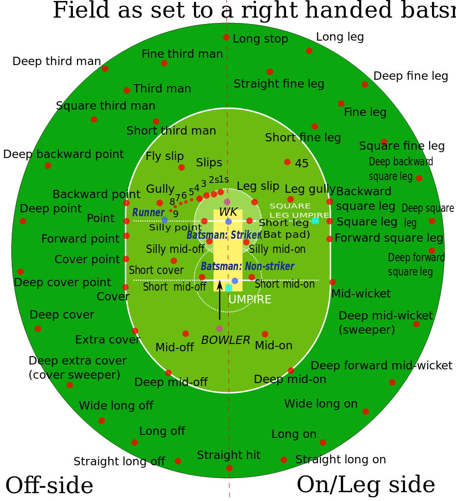

Cricket is a bat-and-ball game between two teams of eleven players on a field at the centre of which is a 20-metre pitch with a wicket at each end. The batting side scores runs by striking the ball bowled at the wicket with the bat.
A cricket team is composed of 11 players, all with different qualities.
Traditionally, a cricket game can last up to 5 days. However, for the purpose of being able to end games quickly, games will last only 2 hours.
Each player will have the opportunity to choose the position they would like to play. If the player does not have a desired position, the manager will assign them a position.